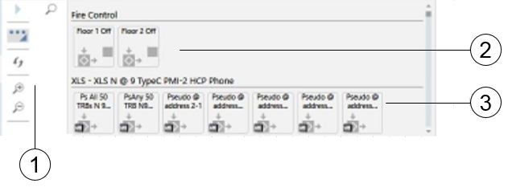

Macro Viewer
The Macro Viewer is an application for displaying and commanding selected control objects: system macros and control panel pseudo-points that are included in a dedicated scope.
For more details about available actions, see Working with Macro Viewer.

User Interface with the Macro Viewer | ||
| Name | Description |
1 | Macro Viewer Toolbar | Toolbar with display and control commands. |
2 | Macros | Group of macro symbols. The groups correspond with the folders of macros. |
3 | Pseudo-points | Pseudo-point symbols, grouped according to the control panels. |

Macro Viewer Symbol | ||
| Name | Description |
1 | Label | Object Description. |
2 | Object status | Stopped ( |
3 | Command not available | The exclamation mark indicates that you cannot command the object at the moment. |
4 | Object icon | The panel icon indicates that the object is located in the control panel and not in the central system. |
 ) or Running (
) or Running ( ). This is opposite to the Execute/Stop command icon in the toolbar.
). This is opposite to the Execute/Stop command icon in the toolbar. -